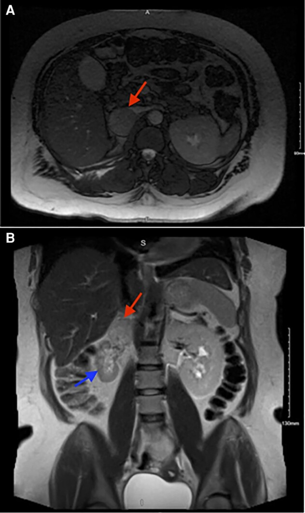
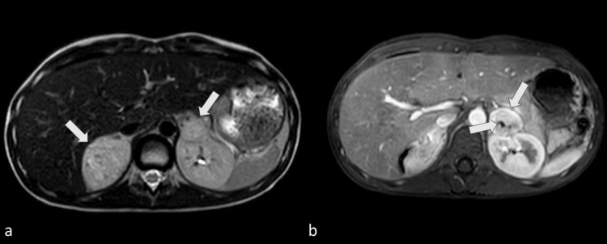
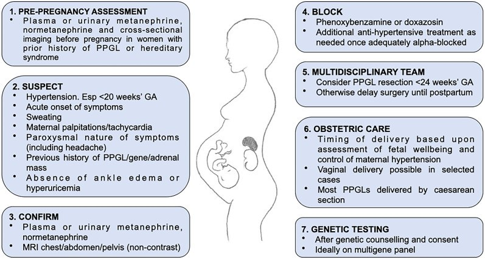
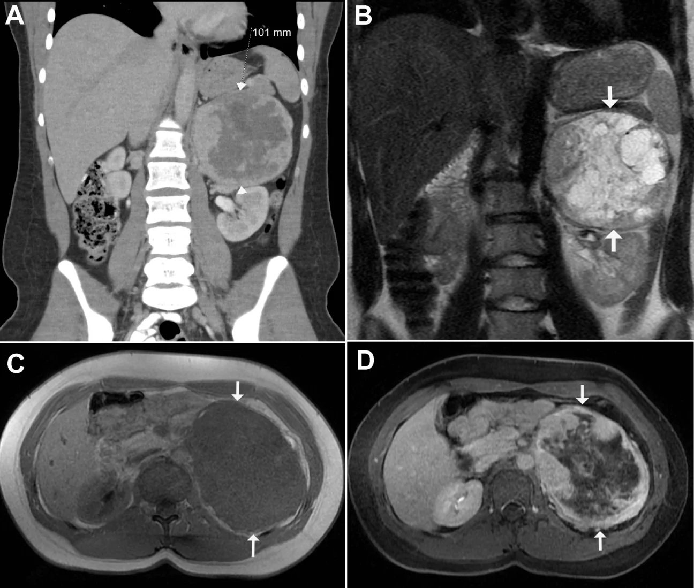
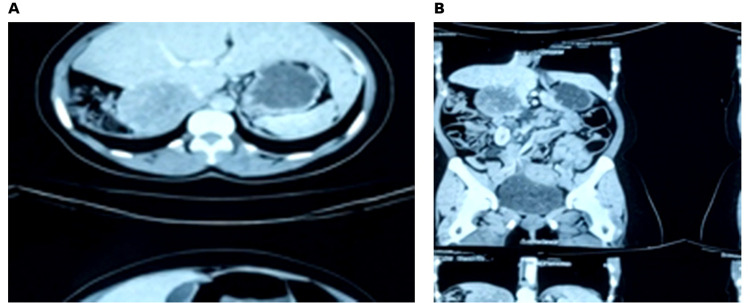

169 — U tủy thượng thận & paraganglioma (PPGL) ở trẻ em và trong thai kỳ: di truyền, bảo tồn vỏ thượng thận, alpha-block và thời điểm mổ / Pediatric and pregnancy pheochromocytoma–paraganglioma
Tags: pattern:khoi-thuong-than pattern:u-tang-mach pattern:di-truyen vung:thuong-than vung:o-bung-nhi score:PASS protocol:MRI-khong-gadolinium-thai incidentaloma:u-thuong-than
Mức chắc chắn (certainty): tổng hợp y văn (literature synthesis) — đoàn hệ nhi khoa Pháp 81 ca (de Tersant M et al., J Endocr Soc 2020, PMC7217277), đoàn hệ Nhật 28 ca (Kimura N et al., Endocr J 2025, PMC11997271), tổng quan quản lý nhi (Michalczewska A et al., Med Sci Monit 2025, PMC11977429), tổng quan PPGL trong thai kỳ (Clifton-Bligh RJ, Rev Endocr Metab Disord 2023, PMC9884650) + ca nguyên văn song thận ở trẻ 12 tuổi (Moya Ochoa C et al., Cureus 2026, PMC13135459).
1. Tổng quan bệnh học – cơ chế hình ảnh
- Định nghĩa: pheochromocytoma (PCC) phát sinh từ tế bào chromaffin tủy thượng thận; paraganglioma (PGL) từ chuỗi giao cảm ngoài thượng thận (bụng, khung chậu, trung thất) hoặc đối giao cảm (đầu–cổ). Cả hai tiết catecholamine (không phải tất cả) → tăng huyết áp (THA), cơn tim đập nhanh, vã mồ hôi, đau đầu.
- Dịch tễ nhi khoa: 1–2 ca/triệu trẻ/năm (khoảng 20% tỷ lệ người lớn); PCC chiếm 80–85%, PGL 15–20%. PPGL gây ~1,7% các ca THA ở trẻ (so với 0,2–0,6% ở người lớn THA). Tuổi chẩn đoán trung bình 11–13 tuổi; đoàn hệ Nhật: 12,8 ± 4,5 tuổi.
- Vì sao trẻ khác người lớn: 70–80% PPGL ở trẻ có đột biến dòng mầm (germline) — so với 30–40% ở người lớn. Hệ quả: đa ổ, hai bên (20–40%), tái phát và di căn cao hơn. Các gen hay gặp: VHL, SDHB, SDHD, SDHC, RET, NF1, MAX, TMEM127. Đoàn hệ Nhật 28 trẻ: VHL 50%, SDHx 35,7%, MAX 3,6%, chưa rõ 10,7%.
- Vì sao khối tăng mạch: tế bào chromaffin giàu mạng lưới mao mạch → ngấm thuốc mạnh thì động mạch, có thể thoát thuốc; khối lớn thường hoại tử/nang hóa trung tâm (đặc điểm của PCC lớn). Trên MRI, mô u giàu nước và hạt neurosecretory → T2 tăng tín hiệu ("light bulb"), nhưng không đặc hiệu; không có mỡ nội bào nên không giảm tín hiệu như adenoma.
- Vì sao không vôi hóa nhiều: khác neuroblastoma (vôi hóa thô 80–90%), PCC chỉ vôi hóa lẻ tẻ; đây là một trong các điểm phân biệt trên CT.
- Số liệu đoàn hệ Pháp 81 trẻ (2000–2016): tuổi trung vị 13,3 (2,2–18); 41 u thượng thận / 40 ngoài thượng thận; 11 di căn đồng thời lúc chẩn đoán; theo dõi trung vị 53 tháng, 27 biến cố (7 PPGL thứ hai, 8 tái phát tại chỗ, 10 tái phát di căn), 2 tử vong. EFS 3/5/10 năm = 80% / 61% / 39%; OS = 97%. Phẫu thuật không hoàn toàn và di căn lúc chẩn đoán là yếu tố nguy cơ biến cố (p = 0,011 và 0,004). 77% (53/68) có đột biến dòng mầm.
- Vì sao theo dõi suốt đời: biến cố đầu tiên có thể xuất hiện trung vị 48 tháng (1–133 tháng), và 8/30 biến cố xảy ra sau 5 năm; EFS giảm từ 80% (3 năm) xuống 39% (10 năm) dù OS vẫn 97% — nghĩa là kiểm soát được nhưng không khỏi hẳn.
1.1. PPGL trong thai kỳ — vì sao là cấp cứu sản khoa
- Tần suất: 1/15.000 đến 1/300.000 thai kỳ; chiếm khoảng 1/450–15.000 ca THA thai kỳ. Đa số gặp ở con so.
- Tử vong: trước đây ~50% (1971); hiện còn mẹ 4–9%, thai 7–14%. Nếu chẩn đoán trước sinh, tử vong mẹ < 1% và tử vong thai thấp hơn rõ — chẩn đoán muộn là yếu tố quyết định.
- Vì sao dễ bỏ sót: hình ảnh lâm sàng giống tiền sản giật (preeclampsia) — THA, đau đầu, tim đập nhanh, vã mồ hôi. Gợi ý PPGL: THA xuất hiện trước 20 tuần, cơn THA kịch phát, hạ huyết áp tư thế, không phù cổ chân, acid uric không tăng. Khoảng 20% ca có THA là biểu hiện đầu tiên; ~30% chỉ được chẩn đoán sau sinh.
- Sinh lý bệnh trong thai: tử cung to chèn ép u + cơn catecholamine khi chuyển dạ; ngoài ra một số PPGL biểu hiện thụ thể LH/hCG (LHCGR) → thai kỳ làm u "thức giấc". Catecholamine > 10 lần giới hạn trên gắn với kết cục mẹ–thai xấu.
- Số liệu u: trung vị > 5 cm; 60–70% một bên, 8% hai bên, 18% PGL đơn độc, 2,5–5% nhiều PGL. 66% ca được xét nghiệm gen có đột biến dòng mầm (SDHB 19%, VHL 13%, RET 19%).
- Nguyên tắc hình ảnh: MRI bụng–khung chậu không gadolinium là lựa chọn; MIBG/PET chống chỉ định trong thai (có thể làm sau sinh nếu nghi hai bên/đa ổ/di căn).
1.1b. Số liệu cập nhật 2021–2025 (bổ sung, đã đối chiếu PMCID)
- Tần suất theo sổ bộ dân số (chính xác hơn "1/15.000–1/300.000"): UKOSS 10/2.852.099 = 0,000351%; Thụy Điển 21/4.390.869 = 0,000478%; Mayo Clinic 2/30.246 = 0,006612% — tức khoảng 1/15.000 đến 1/285.000 thai kỳ, dao động theo cách chọn mẫu (PMC12312014). Một số bài vẫn dùng 1/15.000–1/54.000 thai kỳ/năm (PMC10941258).
- Tử vong theo thời điểm chẩn đoán (Bancos 2021, Lancet Diabetes Endocrinol, 232 nữ/249 thai, 1980–2019): tử vong mẹ 1%, tử vong thai 9%, 6,5% mẹ có biến chứng tim nặng do catecholamine. 31,3% chỉ được chẩn đoán sau sinh; trong nhóm đó tử vong mẹ 3,9% so với 0% khi chẩn đoán trước sinh — chẩn đoán trước sinh là yếu tố quyết định nhất. Tổng quan 135 ca: tử vong mẹ 8%, thai 17% (PMC10990643).
- Giá trị hình ảnh (số cụ thể): MRI phát hiện u thượng thận ở cuối thai kỳ 90–100%, siêu âm chỉ 54% — vì thế không được "yên tâm" khi siêu âm bình thường ở tam cá nguyệt 3 (PMC12312014).
- Thời điểm mổ (số cụ thể): ~70% ca được cắt u lúc sinh hoặc sau sinh; nếu chẩn đoán trước 24 tuần và u không kiểm soát được bằng thuốc → mổ nội soi 14–23 tuần; biến cố mẹ–thai ở nhóm mổ trước sinh 3,8% (3/78) đến 4,5% (4/88) (PMC12312014).
- Chẹn alpha trong thai: doxazosin có tỉ lệ nồng độ thai/mẹ 0,8 và chưa có ca hạ huyết áp sơ sinh nào được báo cáo; phenoxybenzamine qua nhau thai rõ hơn (có ca hạ HA/suy hô hấp sơ sinh) — vẫn dùng được nhưng phải báo sơ sinh. Đích huyết áp theo ESC/ESH trong thai: < 140/90 mmHg.
- Mô hình bệnh án trong thực hành (ca PMC10941258): nữ 33 tuổi, 11 tuần 5 ngày, khối cạnh thượng thận phải 4 cm sát tĩnh mạch chủ dưới, normetanephrine huyết tương 2.141,8 pg/mL (giới hạn 0–150,6), normetanephrine niệu 1.739 µg/24 giờ; phenoxybenzamine 10 mg × 2/ngày không đủ → chuyển doxazosin 2 mg + metoprolol 12,5 mg × 2/ngày, cắt nội soi ở 18 tuần 1 ngày.

Hình A (axial): khối 4 cm cạnh thượng thận phải (mũi tên đỏ) sát tĩnh mạch chủ dưới. Hình B (coronal): khối nằm trên thận phải teo (mũi tên xanh) — gợi ý u cận hạch/khối chèn ép lâu ngày. Đây là MRI không gadolinium ở tam cá nguyệt 1, đúng là modality nên dùng. Nguồn: JCEM Case Reports 2024 (PMC10941258), CC BY 4.0, nguyên bản.2. Mẫu hình + chẩn đoán phân biệt theo vị trí (Gamut)
- Khối thượng thận ở trẻ — 6 nhóm chính:
- PCC (thượng thận): T2 sáng, ngấm mạnh, có thể nang/hoại tử; hai bên khi có đột biến (VHL, RET, MAX, NF1).
- Neuroblastoma: tuổi nhỏ (trung vị 2 tuổi), vôi hóa thô 80–90%, vượt đường giữa, bọc mạch, MIBG dương; catecholamine chuyển hóa (HVA/VMA) tăng.
- Ganglioneuroma: trẻ lớn, không tiết catecholamine, vôi hóa lẻ tẻ, cấu trúc dạng cuộn chỉ, T2 sáng.
- Ung thư vỏ thượng thận (ACC): Cushing/nam hóa, khối lớn không đồng nhất, vôi hóa, có thể huyết khối tĩnh mạch; cortisol/androgen tăng.
- Adenoma vỏ thượng thận: nhỏ, giàu mỡ (< 10 HU không cản quang), ngấm nhanh và thoát nhanh.
- Xuất huyết thượng thận sơ sinh: khối không ngấm, thay đổi theo thời gian, tự thoái triển; không sốt, catecholamine bình thường.
- Khối thượng thận ở thai phụ: PPGL (cơn THA, u lớn), adenoma (tình cờ), xuất huyết thượng thận, di căn (phổi/vú), và tiền sản giật — bệnh cảnh phổ biến nhất nhưng không có khối.
- Mẹo nhớ "PHEO vs NET": Pharochromocytoma (T2 sáng, ngấm mạnh), Hemorrhage (không ngấm), Endocrine adenoma (giàu mỡ), Other tumor/metastasis; Neuroblastoma (vôi hóa, trẻ nhỏ), Extra-adrenal PGL (chuỗi giao cảm), Thyroid/other neck mass nếu ở đầu–cổ.
3. Bảng so sánh phân biệt (ma trận đối chiếu)
| Thực thể (entity) | Hình ảnh điển hình (CT/MRI) | Chốt vào (rule-in) | Chốt loại (rule-out) | Gợi ý xác nhận |
|---|---|---|---|---|
| Pheochromocytoma | Khối thượng thận ngấm mạnh, T2 sáng, có thể nang/hoại tử trung tâm, vôi hóa lẻ tẻ | Metanephrine/normetanephrine tăng + ngấm mạnh + T2 sáng; hai bên gợi ý di truyền | Mỡ nội bào (< 10 HU) + không tiết catecholamine → adenoma | Plasma free metanephrines; MIBG/DOTATATE; không sinh thiết trước khi block |
| Neuroblastoma | Trẻ < 5 tuổi, vôi hóa thô 80–90%, vượt đường giữa, bọc mạch, di căn xương | Vôi hóa + bọc mạch + HVA/VMA tăng + MIBG dương | U nhỏ, T2 sáng, không vôi hóa, ngấm mạnh → nghĩ PCC | MIBG, NSE, sinh thiết tủy xương |
| Ganglioneuroma | Trẻ lớn, bờ rõ, cuộn chỉ, vôi hóa lẻ tẻ, T2 sáng, ngấm chậm | Không tiết catecholamine + cấu trúc cuộn chỉ | Catecholamine tăng + ngấm mạnh → PCC | Theo dõi/sinh thiết nếu to |
| ACC | Khối lớn, không đồng nhất, vôi hóa, huyết khối TM | Cushing/nam hóa + cortisol/androgen tăng | Metanephrine bình thường + mỡ nội bào → adenoma | Nội tiết + CT/MRI bụng–ngực |
| Adenoma vỏ | Nhỏ, < 10 HU không cản quang, ngấm nhanh–thoát nhanh | Giàu mỡ + không triệu chứng | T2 rất sáng + ngấm mạnh → PCC | CT mô tả mỡ; theo dõi |
| Xuất huyết thượng thận | Sơ sinh, khối không ngấm, viền/không đồng nhất, tự nhỏ | Không ngấm + catecholamine bình thường + tự thoái triển | Ngấm mạnh, T2 sáng, to lên → u | Siêu âm/CT theo dõi 2–4 tuần |
| PPGL thai kỳ | MRI không gadolinium: khối thượng thận T2 sáng, ngấm mạnh (nếu có gadolinium thì tránh) | THA trước 20 tuần + cơn kịch phát + metanephrine tăng | Phù + acid uric tăng + protein niệu → tiền sản giật | MRI; không MIBG/PET khi đang thai |

MRI bụng: (a) T2-weighted turbo spin-echo và (b) T1 sau gadolinium — hai khối thượng thận (mũi tên), phải 5,4 × 4,0 × 5,0 cm, trái 3,0 × 2,5 × 3,3 cm, không xâm lấn tại chỗ. Moya Ochoa C et al., Cureus 2026 (PMC13135459, Fig. 2), CC BY 4.0.4. Protocol chụp + hệ phân độ/điểm chuẩn hóa
4.1. Chẩn đoán sinh hóa trước, hình ảnh sau
- Plasma free metanephrines: độ nhạy 97–100%; 24 giờ nước tiểu metanephrine: nhạy ~97%, đặc hiệu ~91%. Ở trẻ nhỏ, lấy máu thường dễ hơn lưu nước tiểu 24 giờ.
- Trước khi lấy máu: ngừng/ghi nhận thuốc gây dương tính giả (chẹn beta, chống trầm cảm 3 vòng, metoclopramide, steroid, sympathomimetic); tư thế nằm, nhịn ăn theo quy trình.
- Cảnh báo: không sinh thiết khối thượng thận trước khi có kết quả sinh hóa và block alpha — nguy cơ cơn tăng huyết áp kịch phát khi chọc.
4.2. Hình ảnh
- CT bụng–khung chậu có cản quang (thì động mạch + tĩnh mạch cửa): đánh giá kích thước, hoại tử, xâm lấn, hạch.
- MRI bụng (ưu tiên trẻ nhỏ, thai phụ): T2, T1 trước/sau gadolinium, DWI. Thai kỳ: không gadolinium.
- Hình ảnh chức năng khi sinh hóa không kết luận, nghi đa ổ/di căn, hoặc trước liệu pháp phóng xạ:
- ¹²³I-MIBG: tốt cho PCC/PGL biệt hóa, dùng khi dự kiến ¹³¹I-MIBG điều trị.
- ¹⁸F-FDG PET/CT: nhạy với SDHB, u kém biệt hóa, di căn xương.
- ⁶⁸Ga-DOTATATE: độ đặc hiệu cao, bộc lộ thụ thể somatostatin, đặc biệt hữu ích cho VHL/SDHx và tìm đa ổ.
- Thai kỳ: MRI không gadolinium là chốt; MIBG/PET chống chỉ định; sau sinh mới làm chức năng nếu nghi hai bên/đa ổ/di căn.
4.3. Chuẩn bị trước mổ — "alpha trước, beta sau"
- Block alpha ít nhất 14 ngày ở trẻ (người lớn 7–14 ngày; trẻ cần ≥ 14 ngày vì liều thấp, chuẩn độ chậm): phenoxybenzamine (không chọn lọc) hoặc doxazosin (chọn lọc α1).
- Beta-blocker chỉ thêm sau khi đã block alpha (thường sau ≥ 1 tuần) để kiểm soát nhịp nhanh; không bao giờ bắt đầu beta trước — sẽ gây co mạch và cơn THA.
- Tránh: metoclopramide, steroid, sympathomimetic — có thể kích hoạt cơn catecholamine.
- Thai kỳ: block alpha ≥ 2 tuần trước mổ/sinh; phenoxybenzamine qua được nhau thai → có thể gây hạ huyết áp và suy hô hấp sơ sinh, cần báo sơ sinh.
4.4. Phẫu thuật và theo dõi
- Nội soi là lựa chọn ưu tiên cho PCC đơn độc; u lớn/xâm lấn có thể mổ mở.
- Bảo tồn vỏ thượng thận (cortical-sparing) ở trẻ có đột biến dòng mầm/hai bên để tránh suy thượng thận suốt đời; nhưng nguy cơ tái phát tại phần vỏ giữ lại (ca MAX tái phát sau 1 năm) → theo dõi sinh hóa chặt.
- Cắt hai bên toàn bộ → thay thế glucocorticoid + mineralocorticoid suốt đời, huấn luyện cơn suy thượng thận cấp.
- Nút mạch trước mổ có thể là biện pháp hỗ trợ ở u lớn/hai bên (ca 12 tuổi dưới đây), nhưng không thay thế block alpha và có thể gây cơn THA trong lúc chụp mạch.
- Theo dõi sau mổ: sinh hóa + huyết áp; theo gen:
- RET (MEN2) / VHL: sinh hóa hằng năm từ 5 tuổi.
- NF1: mỗi 3 năm, từ 10–14 tuổi.
- SDHB: từ 5 tuổi; SDHA/SDHC/SDHD: từ 10 tuổi; theo dõi suốt đời vì có thể muộn > 5 năm.
flowchart TD
A[Trẻ tăng huyết áp + khối thượng thận] --> B[Đo plasma hoặc nước tiểu metanephrine]
B --> C{Metanephrine tăng?}
C -->|Có| D[Nghĩ PPGL - không sinh thiết]
C -->|Không| E[Xét nghiệm vỏ thượng thận và catecholamine chuyển hóa]
D --> F[CT hoặc MRI bụng]
F --> G{Nghi hai bên hoặc di căn?}
G -->|Có| H[MIBG hoặc FDG PET hoặc DOTATATE]
G -->|Không| I[Block alpha ít nhất 14 ngày]
H --> I
I --> J{Beta-blocker cần?}
J -->|Có| K[Thêm beta sau khi đã block alpha]
J -->|Không| L[Mổ nội soi hoặc bảo tồn vỏ]
K --> L
L --> M[Xét nghiệm gen và theo dõi suốt đời]
M --> N[Thai kỳ: MRI không gadolinium, mổ trước 24 tuần hoặc sau sinh]
4.5. Thai kỳ — trình tự xử trí (theo Clifton-Bligh 2023)
- Nghi ngờ (THA < 20 tuần, cơn kịch phát, không phù) → xác nhận sinh hóa.
- MRI không gadolinium; không MIBG/PET.
- Block alpha ≥ 2 tuần + kiểm soát THA; thêm beta sau.
- Mổ cắt u trước 24 tuần nếu chẩn đoán sớm; nếu chẩn đoán tam cá nguyệt 3 → sinh trước, mổ sau sinh.
- Sinh: > 2/3 ca mổ lấy thai; sinh ngả âm đạo được ở ca chọn lọc với gây tê ngoài màng cứng và không rặn tích cực.
- Sau sinh: xét nghiệm gen (panel gồm RET, SDHB, SDHC, SDHD, SDHA, VHL, TMEM127, MAX), theo dõi suốt đời.

Sơ đồ 7 bước: tầm soát trước mang thai → nghi ngờ → xác nhận → block alpha → đội đa chuyên khoa → chăm sóc sản khoa → xét nghiệm gen. Clifton-Bligh RJ, Rev Endocr Metab Disord 2023 (PMC9884650, Fig. 1), CC BY 4.0.5. Biến thể bình thường và cạm bẫy
- Sinh thiết trước block = nguy hiểm: chọc khối PCC có thể gây cơn THA kịch phát, xuất huyết, vỡ u. Chỉ sinh thiết khi đã loại trừ PPGL bằng sinh hóa hoặc đã block đầy đủ.
- Beta trước alpha: gây co mạch không đối kháng → cơn THA nặng. Luôn alpha trước ≥ 1 tuần, rồi mới beta.
- Thai kỳ: không dùng gadolinium/MIBG/PET; không nhầm với tiền sản giật — THA trước 20 tuần, hạ HA tư thế, không phù/acid uric bình thường là các mảnh ghép gợi ý. Metoclopramide và steroid có thể khởi phát cơn.
- T2 sáng không đồng nghĩa PCC: neuroblastoma, ganglioneuroma, nang/xuất huyết cũng T2 sáng. Vôi hóa thô + trẻ < 5 tuổi nghiêng neuroblastoma; mỡ nội bào nghiêng adenoma.
- SDHB và MIBG âm: PPGL do SDHB có thể không bắt MIBG; dùng ¹⁸F-FDG PET hoặc DOTATATE. Đừng kết luận "không có u" chỉ vì MIBG âm.
- "Quy tắc 10%" đã lỗi thời: ở trẻ, 70–80% có đột biến; không dùng "10% hai bên/10% ác tính" để loại trừ.
- U nhỏ vẫn có thể nguy hiểm: u < 2 cm có thể chỉ tăng metanephrine nhẹ trên giới hạn; vẫn cần block trước mọi can thiệp.
- Sau cắt hai bên toàn bộ: nguy cơ suy thượng thận cấp nếu không tăng liều khi stress/phẫu thuật; bệnh nhân phải mang thẻ cảnh báo và biết tự tiêm hydrocortisone.
- Bảo tồn vỏ không miễn tái phát: ca MAX tái phát sau 1 năm ở phần vỏ giữ lại — theo dõi sinh hóa hằng năm, không chỉ hình ảnh.
6. Tự lượng giá — Blind Quiz
Ca 1 — Bé trai 12 tuổi, tình cờ phát hiện hai khối thượng thận khi khám THA. Xem MRI và PET.
- Gợi ý: huyết áp dao động, vã mồ hôi; 24 giờ metanephrine 24.150 µg/24 giờ.
- Câu hỏi: Hai khối là gì? Có cần sinh thiết trước mổ không? Vì sao phải block alpha trước?
Bấm để hiện đáp án (findings + chẩn đoán)
- Findings: (a) T2: hai khối thượng thận tăng tín hiệu, bờ rõ; (b) T1 sau gadolinium: ngấm thuốc mạnh, không xâm lấn cơ hoành/chân thận. Kích thước 5,4 × 4,0 × 5,0 cm (phải) và 3,0 × 2,5 × 3,3 cm (trái).
- Chẩn đoán: pheochromocytoma hai bên ở trẻ — cần xét nghiệm gen (VHL/RET/MAX/NF1) và tầm soát đa ổ.
- Không sinh thiết: sinh hóa đã xác nhận + nguy cơ cơn THA khi chọc. Block alpha + beta trước, sau đó nút mạch trước mổ (ca này) và cắt nội soi hai bên; xuất viện ngày 7, thay thế glucocorticoid + mineralocorticoid suốt đời.
- PET DOTATATE (ảnh dưới) xác nhận hai ổ bắt xạ mạnh, không di căn xa.
- Nguồn: Moya Ochoa C et al., Cureus 2026 (PMC13135459, Fig. 2–3), CC BY 4.0.
Ca 2 — Bé gái 17 tuổi, khó thở và tim đập nhanh, huyết áp bình thường. CT bụng có cản quang.

- Gợi ý: khối 10 cm ở thượng thận trái, có vùng trung tâm giảm đậm độ.
- Câu hỏi: Mô tả dấu hiệu? Chẩn đoán phân biệt? Có nên chọc hút chẩn đoán?
Bấm để hiện đáp án (findings + chẩn đoán)
- Findings: khối 101 mm thượng thận trái, ngấm thuốc dạng nốt ở ngoại vi, trung tâm giảm đậm độ do hoại tử/nang (mũi tên); (B) T2 coronal và (C/D) T1 fat-sat trước/sau gadolinium cho thấy thành phần nang trong u.
- Chẩn đoán: pheochromocytoma (dù bệnh nhân không tăng huyết áp — PPGL có thể không điển hình). Phân biệt: ACC, neuroblastoma (ở tuổi này ít), ganglioneuroma, di căn.
- Không chọc hút trước khi có metanephrine và block alpha; xét nghiệm gen vì u lớn ở người trẻ.
- Nguồn: Shatadal A et al., Pediatr Radiol 2026 (PMC13271840, Fig. 10), CC BY 4.0.
Ca 3 — Thai phụ 27 tuổi, 26 tuần, tim đập nhanh, đau đầu, huyết áp dao động. Siêu âm thấy khối thượng thận phải; 24 giờ metanephrine tăng.

- Gợi ý: trước đó được chẩn đoán "tiền sản giật" nhưng không phù, acid uric bình thường.
- Câu hỏi: Chẩn đoán? Dùng hình ảnh gì để theo dõi thai kỳ? Khi nào mổ? Nguy cơ cho mẹ và thai nếu bỏ sót?
Bấm để hiện đáp án (findings + chẩn đoán)
- Findings: (A) CT axial và (B) coronal: khối lớn thượng thận phải, không xâm lấn rõ; bối cảnh lâm sàng + metanephrine tăng.
- Chẩn đoán: pheochromocytoma trong thai kỳ. Theo dõi bằng MRI không gadolinium; không MIBG/PET khi đang thai.
- Xử trí: block alpha ≥ 2 tuần, kiểm soát cơn THA; trong ca này phải mổ lấy thai cấp cứu ở 31 tuần (bé 1,8 kg), cắt u nội soi sau sinh 10 tuần.
- Nếu bỏ sót: tử vong mẹ 4–9%, tử vong thai 7–14%; chẩn đoán trước sinh làm giảm tử vong mẹ xuống < 1%.
- Nguồn: Bashir M et al., Int Med Case Rep J 2026 (PMC13360954, Fig. 2), CC BY-NC 4.0 — dùng nguyên bản, không crop/ghép.
Bài liên quan chéo
- 168 – Pheochromocytoma & paraganglioma: chẩn đoán và phân loại
- 170 – Phình động mạch chủ bụng & biến chứng (THA thứ phát ở người lớn)
- 650 – Thần kinh nhi: xuất huyết mầm & u hố sau (tiếp cận khối u nhi)
- 667 – U mạch máu gan ở trẻ & điều trị (nhóm u mạch máu nhi)
Không dùng để chẩn đoán độc lập khi chưa có người hướng dẫn.